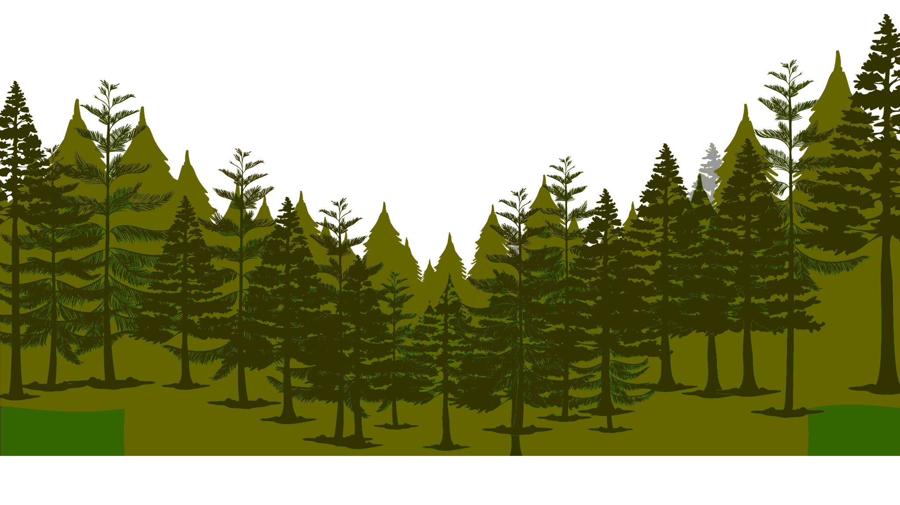
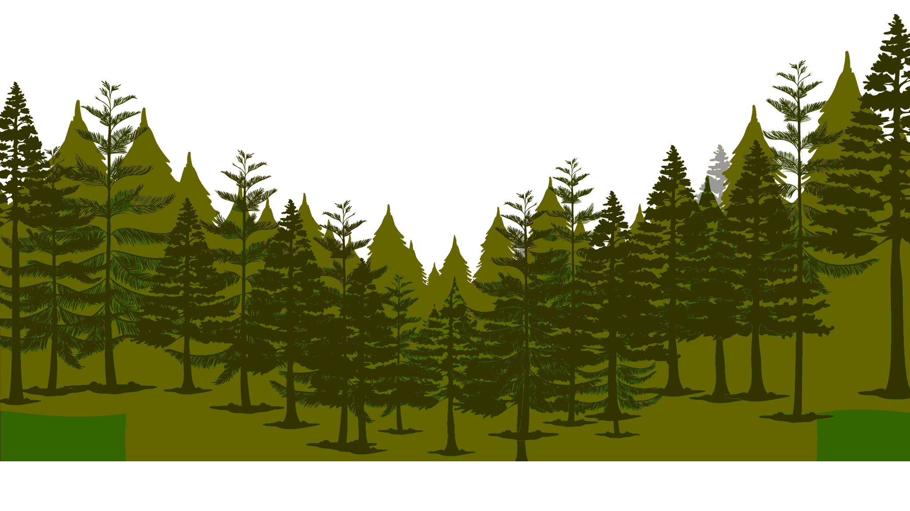
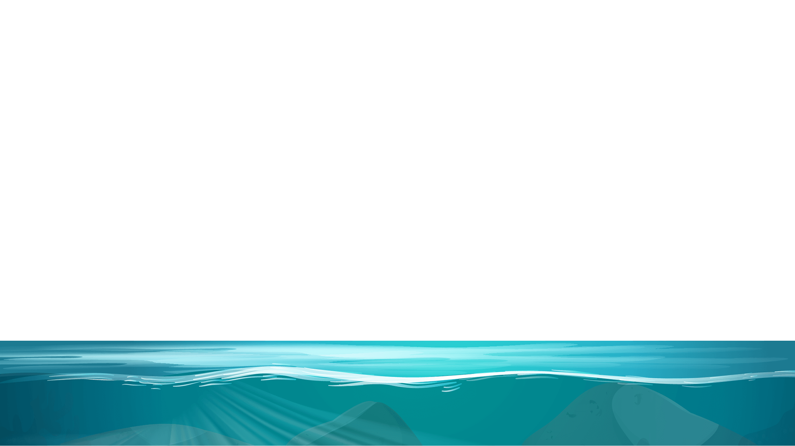
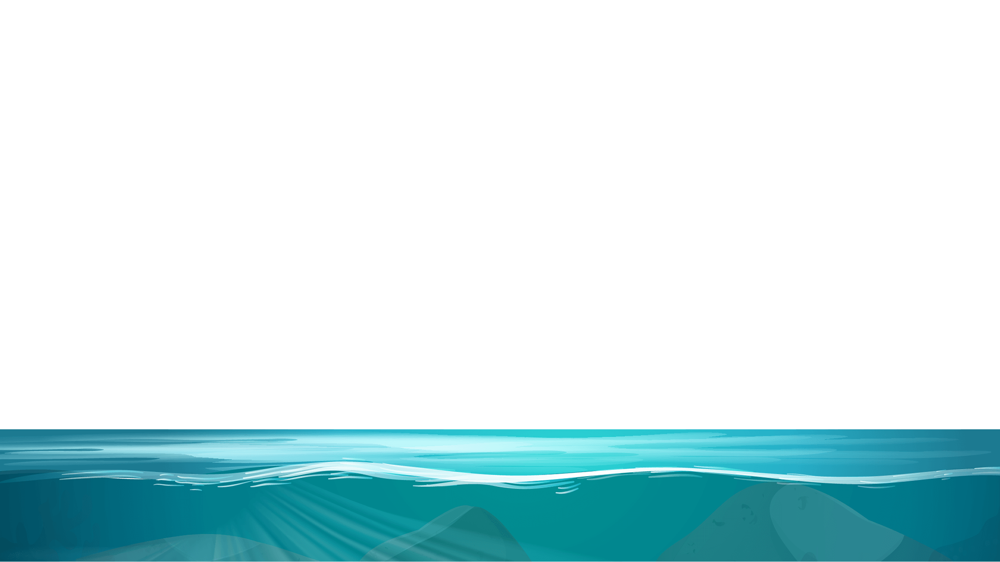

Explore

Explore
 

Parallax Scrolling Effects
Parallax is a displacement or difference in the apparent position of an object viewed along two different lines of sight, and is measured by the angle or semi-angle of inclination between
those two lines. Due to foreshortening, nearby objects show a larger parallax than farther objects when observed from different positions, so parallax can be used to determine distances.
To measure large distances, such as the distance of a planet or a star from Earth, astronomers use the principle of parallax. Here, the term parallax is the semi-angle of inclination between
two sight-lines to the star, as observed when Earth is on opposite sides of the Sun in its orbit. These distances form the lowest rung of what is called "the cosmic distance ladder", the first
in a succession of methods by which astronomers determine the distances to celestial objects, serving as a basis for other distance measurements in astronomy forming the higher rungs of the
ladder.
Parallax also affects optical instruments such as rifle scopes, binoculars, microscopes, and twin-lens reflex cameras that view objects from slightly different angles. Many animals, along with
humans, have two eyes with overlapping visual fields that use parallax to gain depth perception; this process is known as stereopsis. In computer vision the effect is used for computer stereo
vision, and there is a device called a parallax rangefinder that uses it to find range, and in some variations also altitude to a target.
A simple everyday example of parallax can be seen in the dashboard of motor vehicles that use a needle-style non-LCD speedometer gauge. When viewed from directly in front, the speed may show
exactly 60, but when viewed from the passenger seat, the needle may appear to show a slightly different speed, due to the angle of viewing.